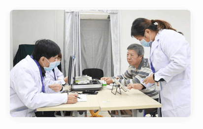

适用人群
存在潜在危险人群
针对早期高血压、早期糖尿病、早期高血脂、早期尿酸增高、肥胖、超重、吸烟等亚健康人群
高危险因素人群
心脏病高危人群提供居家服务，包括高血压、糖尿病、高脂血症、高尿酸血症、痛风等患者
心脏康复五大处方管理
筛查与预防
院外动态心电监测，随时采集、捕捉心律异常事件。更加及时、便捷。
筛查与预防
院外动态心电监测，随时采集、捕捉心律异常事件。更加及时、便捷。
筛查与预防
院外动态心电监测，随时采集、捕捉心律异常事件。更加及时、便捷。
筛查与预防
院外动态心电监测，随时采集、捕捉心律异常事件。更加及时、便捷。
适用人群
高危险因素人群
心律失常具有偶发性、一过性的特点，短时间的心电监测难以捕捉到心律失常事件，造成患者难以监测到病情，错过防治时机。一旦心脏病突发，将会危害生命。

智慧医养结合社区
居家心脏健康管理非常适合应用于养老社区。临床经验表明，男性超过60，女性超过65岁，都是心血管疾病高发人群。如何做好危险因素分析与控制，保护好心脏健康对于中老年人来说都是非常重要的。
- 加入我们
- 诚聘人才
- 招商政策
- 关注我们
- 新浪招聘
- 隐私政策

扫一扫关注服务号
扫一扫关注订阅号
-
0537-5661501(客服热线)
- 0373-5866060(商务合作)
- 周一至周五(法定节假日除外)
- 上午9:00-11:40 下午13:30-17:30
©天津中科爱乐芙医疗科技有限公司版权所有. 津ICP备18009352号-1 法律声明